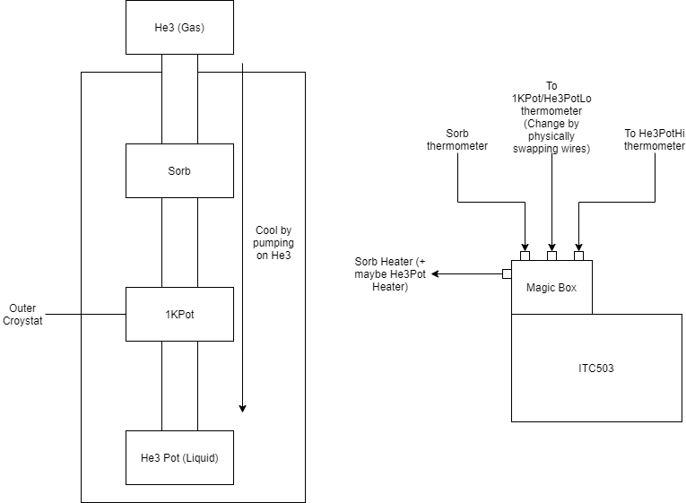

ITC503 (Old-style Heliox)
Original implementation for use on MuSR 3He refrigerator. The device is a Heliox/ITC503 based refrigerator controlled by the HLX503 IOC.
Physical operation and situation

Situation
The 3He Refrigerator is also known as the 3He Insert because it is inserted into an outer cryostat. This document is only related to the insert not the outer cryostat, but it is useful to know that the outer cryostat cools the 3He insert to ~1.5K. From the IBEX point of view the insert and outer cryostat are separate pieces of kit. However, it is useful to know that the 1KPot in the insert is wired to the outer cryostat to control its temperature (we do not control the temperature via the insert). The insert is controlled by 1 ITC503 connected to a “magic box” that is wired to help read and control the various parts of the insert.
Thermometers and heaters
TL;DR 4 thermometers, 2 heaters. We can read 3 thermometers at a time and the ITC503 controls two heaters based on the temperature setpoint and control channel we give it.
On the insert itself, there are 4 thermometers: the sorb thermometer, the 1K Pot thermometer, the He3Pot “High Temperature” thermometer and the He3Pot “Low Temperature” thermometer. Both the He3Pot thermometers are measuring the same temperature, one is good at measuring low-temperature values the other at high-temperature values.
There are 3 ports on the magic box to connect the thermometers to (as there are 3 sensor channels in the ITC503 itself). The first sensor is connected to the sorb thermometer, the second to either the He3Pot Low-temperature thermometer or the 1K Pot (these are physically switched on the magic box) and the third is wired to the He3Pot high-temperature thermometer.
The ITC503 has 1 output and the insert has two heaters (the sorb heater and the he3pot heater). By using the magic box this 1 output is at all times connected to the sorb heater, but only if the ITC503 is controlling based on the He3Pot “High Temperature” sensor then this output is also wired to the he3pot heater.
Operation/Behaviour
TL;DR When you heat the sorb this reduces the pumping efficiency of He3 which cools the He3 pot more.
The temperature of the He3Pot is defined by how much Helium-3 is being pumped onto the pot. The ITC503 controls the sorb temperature which affects the pumping efficiency of the He3 and as such the temperature of the He3Pot. When the Sorb temperature increases in heat the pumping efficiency is reduced which consequently warms the He3Pot. When the sorb reduces in heat the pumping efficiency is increased so the He3Pot temperature reduces.
The Sorb sits in the outer cryostat so has a base temperature of about 1.5k that it will sit at when not heated. The ITC503 output is wired at all times to a sorb heater which allows the ITC503 to control the heat of the sorb and when we are controlling based on the He3Pot “High Temperature” sensor then this output is also wired to the he3pot heater.
Regeneration
TL;DR After 24-48 hours of operation the He3 is no longer pumped onto the pot and we have to regenerate it by heating the sorb to ~30K.
The system is closed-loop because of how expensive Helium-3 is. However, at some point there will not be enough Helium-3 in the pot to create cooling power (it is all in the pump). The symptom of this is that the temperature of the He3Pot to rise to the temperature of the 1K Pot.
The process that causes the He3 to be pumped onto the He3 Pot is called absorption. This process is reversed when the sorb is at ~30K. To regenerate the He3 we need to heat the sorb to ~30K wait for the He3Pot temperature to reach a certain value and then fast cool the sorb to resume operation.
HLX503 IOC Features
Current
Communication to one ITC503 with control channels defined for each of the
Sorb,He3PotHiand1KPot/He3PotLoSet He3Pot temperature setpoint
Set Sorb temperature setpoint
Manual recondense
Setting sorb and he3pot pids via tpar file
Turn He3Pot Heater Off
Graph the He3Pot temperature
Monitor He3Pot setpoint, control channel, heater power, heater auto/manual
Future
Control Logic
Setting He3Pot Temperature
If set temperature < macro for Maximum temperature to operate the Heliox at
If set temperature > macro for maximum temperature to use He3 cooling
Change control channel to
He3PotHicontrol channel
Else
Change control channel to
He3PotLocontrol channel
If Lookup PIDs is on: -Look up He3Pot PIDs for the given setpoint and write them to the device
Write temperature setpoint
Else
Temp setpoint in alarm
Setting Sorb temperature
Change control channel to Sorb control channel
If Lookup PIDs is on:
Look up SORB PIDs for the given setpoint and write them to the device
Write temperature setpoint
Turning the He3Pot Heater off
Change control channel to He3Pot
Set He3Pot autoheat to False
Set He3Pot heater output % to 0
Recondensing
Autorecondensing
Not to be implemented in first pass.
All of the first set of conditions must be met and at least one of the second set of conditions. If this is the case then a recondense is required.
First set of conditions
All must be met before checking second set of conditions.
ITC503 is using the control channel chosen for the
He3PotLoin macrosTemp setpoint < Maximum temperature to use He3 cooling macro
Auto condense enabled by macro
Second set of conditions
Only one of these conditions needs to be met.
Sorb temperature check is set to on in macros and Sorb temperature > condense threshold for the sorb temperature set in macros
He3Pot temperature check is set to on in macros and He3Pot temperature > condense threshold for the He3 Pot temperature set in the macros
Temperature error check is set to on in macros and difference between He3Pot temperature setpoint and He3Pot actual temperature > condense threshold for temperature error set in the macros
Recondense Logic
TL;DR Heat up the sorb to cause recondense, wait for He3Pot and Sorb to reach given values (showing recondense complete), fast cool the sorb and set the He3Pot to a user given temperature.
The logic is split into 4 parts. Part 1 initialises the correct state, sets some states on the device, and waits for the Sorb and He3Pot temperatures to match certain criteria. Part 2 does mostly the same but using user-specified values from the macros specifically for part 2. Part 3 fast cools the Sorb, and part 4 is a final clear up.
Part 1
Entry
Set the last start of condense time to now
Set recondensing status to true
Set status of skipped, cancelled and timed out to False
Set success status to False
Set status to part 1
Set to manual heating and 0% heater output
Set that we are not using tpar PIDs
Set autopid to false
Write Sorb PID values given by the user in the macros
Change control channel to use Sorb
Set temperature setpoint (sorb) to value given by the user in the macros
Wait until one of the following conditions is met
The user skips the part
Set skipped status to True
Set part success status to False
The user cancels the operation
Set part success and overall success to false
Skip to not recondensing
The operation times out
Set part success to false
Skip to the finish
Sorb temp > User specified sorb condensing temp (from macros) – 0.5 and He3 Pot temperature < User specified condense He3Pot target for part 1
Set that this part was successful
Part 2 (Now not needed - removed)
Set skipped to false
Set status to part 2
Wait for the same conditions as in part 1 but using the He3Pot target specified for part 2 in macros
Do same actions for each case
If part successful then wait for the number of seconds given by the user in the macros
Part 3
Set skipped to False
Set status to fast cooling the sorb
Change control channel to use Sorb
Set sorb heater output to 0%
Set sorb temperature setpoint to 0K
Wait for the same skipped, cancelled, and timeout conditions and do the same actions or wait for this condition:
Sorb temperature < final sorb temperature specified by the user in macros
Wait for 2 seconds
Finish
This should execute even if timed out, skipped or previous parts are successful, but not cancelled
Set status to finishing
If all parts have been successful then set overall success to true
Set last finish of condense to now
If the He3Pot temperature setpoint > the user-specified temperature threshold for He3 operation
User will be notified by the He3Pot temperature setpoint PVs being in alarm if this happens
Set He3Pot temperature to default post condense he3pot temp macro
Else
Set He3Pot temperature to the user-specified temperature setpoint
Set condensing status to False
Reset back to using autopid/tpar file/manually entered values as before recondense
Comms
Controls one ITC503 on an RS232 connection direct into the MOXA.
Macros with defaults for the ITC503:
Baud rate e.g.
BAUDBits e.g.
BITSParity e.g.
PARITYStop bit e.g.
STOP
Set control channel and sensor details using macros e.g. SORB_CHANNEL and SORB_SENSOR.
Further configuration of settings for recondensing and general operations are available (see macros).